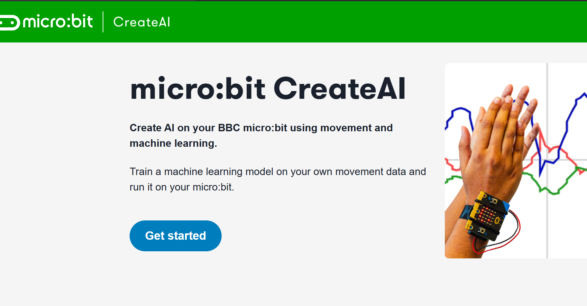

Micro:bit
CreateAI
Sessioni, campioni, dati live, azioni e addestramento del modello con Micro:bit CreateAI.
Cosa vedremo
CreateAI trasforma il Micro:bit in uno strumento di machine learning pratico e didattico: colleghiamo la scheda al browser, definiamo le azioni da riconoscere, registriamo i campioni e addestriamo un modello direttamente online. In questo modulo seguiamo ogni fase del ciclo, dal primo accesso all'ambiente fino all'uso del modello in un programma MakeCode, con la documentazione dei risultati e l'iterazione sul dataset.
createai.microbit.org e nuova sessione
categorie che il modello deve riconoscere
campioni registrati per ciascuna azione
dati in tempo reale dalla scheda
addestrare, testare e usare il modello in MakeCode
dataset, errori, iterazione e documentazione
CreateAI in breve
CreateAI è una piattaforma didattica gratuita sviluppata dalla Micro:bit Educational Foundation che porta il Micro:bit dentro un flusso di machine learning completo. Non serve installare nulla: tutto avviene nel browser su createai.microbit.org. Si registrano esempi di movimento o altro segnale del sensore, si assegnano etichette descrittive alle azioni, si addestra un modello con un clic e si testa il risultato in tempo reale collegando la scheda fisica. L'obiettivo è rendere comprensibile il ciclo dati-addestramento-predizione senza richiedere competenze matematiche avanzate.

Avviare una sessione
Tutto il lavoro di CreateAI vive dentro una sessione: uno spazio che tiene insieme le azioni definite, i campioni registrati e il modello addestrato. Non c'è un account che ricorda i tuoi progressi: la sessione esiste solo finché la pagina resta aperta, e per conservarla va scaricata come file sul computer. Per iniziare vai su createai.microbit.org, crea una New Session e collega la scheda, così la piattaforma riceve i dati dell'accelerometro in tempo reale mentre lavori.
Browser
L'ambiente è interamente online, come MakeCode. Nessuna installazione richiesta: basta Chrome o Edge aggiornati.
New Session
Crea lo spazio di lavoro con azioni, campioni e modello. Ogni sessione è indipendente e salvabile come file .json.
Scheda collegata
Il Micro:bit collegato via USB fornisce dati reali dall'accelerometro da registrare come campioni.
Salva
Usa il pulsante di salvataggio frequentemente per non perdere il lavoro. Il file salvato può essere riaperto in sessioni future.
Le aree dell'IDE
L'interfaccia di CreateAI è divisa in sezioni distinte che corrispondono alle fasi del ciclo di lavoro: definisci le azioni, osserva i dati live, registra campioni, visualizza la rappresentazione dei dati, allena il modello e verifica i risultati. Capire dove si trovano questi controlli accelera il lavoro in laboratorio.
Azioni
Le classi da riconoscere: ad esempio "fermo", "shake", "destra". Ogni azione ha il proprio raccoglitore di campioni.
Rappresentazione
Visualizza i dati di ogni campione come grafico. Aiuta a vedere se le azioni producono segnali distinguibili.
Record
Avvia la registrazione mentre esegui il gesto. Il sensore cattura accelerazione su tre assi (X, Y, Z).
Samples
Elenca tutti i campioni registrati per quell'azione. Da qui si possono eliminare registrazioni sbagliate.
Live data
Mostra in tempo reale i valori del sensore mentre la scheda è in movimento.
Train model
Avvia l'addestramento sui campioni raccolti. Dopo il training il modello è pronto per classificare nuovi movimenti.
Pipeline CreateAI
Il lavoro con CreateAI non è un singolo clic ma una pipeline ripetibile: una sequenza ordinata in cui ogni passo prepara il successivo. Osservare i dati live prima di registrare evita di raccogliere campioni indistinguibili; testare con movimenti nuovi rivela se il modello ha davvero imparato oppure ha solo memorizzato gli esempi. E quando il test fallisce non si ricomincia da zero: si torna al passo che ha causato il problema, si corregge il dataset e si riaddestra. Le prossime slide esaminano ciascun passo in dettaglio, con i criteri di qualità da rispettare.
La pipeline non è lineare: si torna spesso ai passi precedenti per migliorare il dataset dopo aver visto i risultati del test.
Azioni come etichette
In CreateAI un'azione è una categoria del modello: assegniamo un nome a un comportamento specifico che vogliamo riconoscere, come "fermo", "shake", "inclina sinistra" o "inclina destra". Le azioni devono essere fisicamente distinguibili tra loro perché il sensore accelerometro legge solo accelerazione sui tre assi. Più le azioni sono simili nei dati, più sarà difficile per il modello separarle correttamente. Scegliere bene le azioni prima di raccogliere dati è la decisione più importante di tutta la sessione.
Etichetta
Il nome dell'azione dice al modello cosa rappresenta ogni gruppo di campioni. Scegli nomi che descrivano il gesto in modo univoco.
Gesto chiaro
Le azioni devono produrre movimenti fisicamente distinti. Un gesto deciso è più facile da classificare di uno lento o ambiguo.
Categorie confuse
Azioni troppo simili (es. "inclina leggermente" vs "inclina molto") generano errori frequenti durante il test del modello.
Nome esplicito
Nomi come "fermo", "shake", "sinistra", "destra" sono più utili di etichette generiche come "A" o "B".
Registrare samples
I campioni sono esempi concreti di un'azione: il modello non capisce intenzioni né descrizioni, vede solo sequenze di valori numerici associati a un'etichetta. Clicca su Record mentre esegui l'azione e la piattaforma cattura pochi secondi di dati dall'accelerometro. Ogni registrazione genera un esempio nel dataset, cioè l'insieme di tutti i campioni etichettati su cui il modello verrà addestrato. Più esempi raccogli—almeno 10-15 per azione—e più variati sono, meglio il modello impara a generalizzare a movimenti che non ha mai visto.
Record
Premi il pulsante e esegui l'azione in modo chiaro e deciso. La registrazione dura circa 1-2 secondi e cattura valori X, Y, Z.
Samples
Ogni registrazione diventa un esempio nel dataset. Puoi vedere e cancellare i singoli campioni dalla lista della sessione.
Ripetizioni
Registra molte volte la stessa azione variando leggermente velocità e angolazione per rappresentare la variabilità reale.
Scarta errori
Se hai premuto Record prima di compiere il gesto o nel mezzo di un'esitazione, elimina quel campione: i campioni sbagliati insegnano cose sbagliate.
Live data
La sezione Live data mostra in tempo reale i valori dell'accelerometro del Micro:bit su tre assi: X (sinistra-destra), Y (avanti-indietro) e Z (su-giù). Prima di addestrare il modello, conviene osservare questi grafici mentre si eseguono le diverse azioni: se due azioni producono segnali simili, il modello farà fatica a distinguerle. Mani instabili o movimenti involontari aggiungono rumore che riduce la qualità dei campioni.
Tempo reale
I grafici si aggiornano in continuazione mostrando esattamente cosa sta rilevando la scheda. Utile per calibrare il gesto prima di registrare.
Pattern distinti
Se due azioni producono curve chiaramente diverse, il modello avrà più probabilità di classificarle correttamente dopo il training.
Rumore
Movimenti involontari, mani che tremano o vibrazioni esterne rendono il segnale meno pulito e i campioni meno utili.
Decisione informata
Se le azioni producono dati live troppo simili, cambia il tipo di gesto o ridisegna le categorie prima di raccogliere campioni.
Qualità del dataset
La qualità degli esempi conta più della "magia" dell'IA. Un dataset povero o sbilanciato produce inevitabilmente un modello che sbaglia, anche se il training è stato eseguito correttamente. Raccogliere dati di qualità significa rispettare quattro principi fondamentali: bilanciamento tra le categorie, coerenza interna di ogni campione, variabilità controllata e pulizia dei dati errati prima di addestrare.
Bilanciamento
Ogni azione dovrebbe avere un numero simile di campioni. Se "shake" ha 30 esempi e "fermo" ne ha 5, il modello favorirà shake in modo artificiale.
Coerenza
Ogni campione deve mostrare davvero l'azione dichiarata, dall'inizio alla fine della registrazione, senza esitazioni nel mezzo.
Variabilità sana
Raccogli esempi leggermente diversi per velocità e angolazione. Campioni troppo identici tra loro non aiutano il modello a generalizzare.
Pulizia
Elimina registrazioni partite in ritardo, interrotte a metà o eseguite con un gesto diverso da quello dichiarato.
Pensare per esempi
Nel codice classico scriviamo regole esplicite: "se l'accelerazione supera una certa soglia, allora è uno shake". In CreateAI non scriviamo soglie: costruiamo invece un insieme di esempi etichettati da cui il sistema ricava automaticamente le distinzioni. La scelta dipende dal problema: le regole restano ideali per logica semplice e trasparente, gli esempi vincono quando le soglie sarebbero troppe o impossibili da scrivere a mano — ma richiedono dati di qualità e un ciclo di test e correzione.
Una regola si legge riga per riga; il modello è una scatola grigia che non mostra il criterio imparato. L'unico modo per fidarsi è testarlo: test e iterazione fanno parte del lavoro ordinario, non sono passi opzionali.
Train model
Train model è il passo in cui CreateAI elabora tutti i campioni raccolti per costruire un classificatore. Il sistema analizza le sequenze numeriche di ciascuna azione, cerca i pattern ricorrenti che le distinguono e costruisce una funzione di classificazione capace di riconoscere nuove letture simili. Più i campioni sono numerosi e di qualità, più il modello sarà preciso. Ogni volta che si modifica il dataset occorre rieseguire il training per aggiornare il modello.
Apprendimento
Il modello cerca differenze statisticamente ricorrenti tra le azioni, non semplici soglie: impara strutture nei dati.
Separazione
Azioni che nei dati occupano "zone" ben distinte sono più facili da riconoscere. Il grafico di rappresentazione aiuta a verificarlo.
Attesa
Il training richiede alcuni secondi di elaborazione. Dopo ogni modifica al dataset va ripetuto: il vecchio modello non si aggiorna da solo.
Salvataggio
Salvare la sessione conserva campioni, azioni e modello addestrato. Ricominciare da capo è costoso: salva spesso.
Testare dopo il training
Dopo il training è fondamentale testare il modello con movimenti nuovi, non ripetendo gli stessi gesti già presenti nel dataset. Un modello che classifica correttamente i propri campioni di training ma sbaglia su dati nuovi ha solo memorizzato gli esempi senza imparare a generalizzare. Prova diverse velocità, angolazioni e persone diverse che eseguono gli stessi gesti: questo rivela la robustezza reale del classificatore.
Dati nuovi
Prova esempi non presenti nel dataset: gesti eseguiti da un'altra persona, a velocità diversa o in posizione leggermente diversa.
Confidenza
Accanto alla predizione compare una percentuale: quanto il modello è "sicuro". Un 95% su "shake" è affidabile; un 55% segnala che il gesto è ambiguo per il modello.
Errore
Se il modello confonde due azioni, torna al dataset: quei campioni sono probabilmente troppo simili tra loro.
Iterazione
Aggiungi campioni per le azioni deboli, elimina quelli ambigui e riaddestra. Ogni ciclo migliora la qualità del modello.
Routine di laboratorio
Seguire una routine ordinata evita gli errori più comuni: modelli addestrati su dati caotici, azioni mal definite o sessioni non salvate. Ecco i sette passaggi da rispettare in ogni attività CreateAI, in ordine preciso, senza saltarne nessuno.
Scegli 2-4 categorie fisicamente distinguibili e assegna nomi descrittivi prima ancora di aprire la sessione.
Mostra o descrivi come va eseguito ogni gesto prima di registrare qualsiasi campione.
Muovi la scheda e verifica che i segnali delle diverse azioni siano visivamente distinti prima di registrare in serie.
Raccogli almeno 10-15 esempi per azione con variazioni controllate di velocità e angolazione.
Clicca su Train model e attendi il completamento del processo senza interrompere.
Prova movimenti non presenti nei campioni, anche fatti da persone diverse, e osserva la confidenza del modello.
Elimina campioni problematici, riaccogli dati se necessario, riaddestra e salva la sessione finale.
Quando il modello sbaglia
Gli errori del modello non sono un fallimento: sono informazioni diagnostiche che indicano esattamente dove il dataset o la definizione delle azioni presentano problemi. Invece di premere ripetutamente Train model sperando in un risultato migliore, analizza la causa dell'errore e intervieni alla fonte.
Azioni simili
Due gesti producono segnali sui tre assi troppo vicini: il modello non riesce a separarli. Ridisegna uno dei gesti in modo più distinto.
Pochi campioni
Il modello ha visto troppo pochi esempi per imparare la variabilità reale dell'azione. Aggiungi almeno 10-15 esempi per ogni categoria.
Dataset sbilanciato
Un'azione ha molti più campioni delle altre: il modello tende a prevedere sempre quella. Pareggia i numeri tra le categorie.
Campioni sporchi
Registrazioni sbagliate, rumorose o con gesti a metà confondono il training. Rivedile e cancella quelle problematiche.
Test troppo facile
Testare ripetendo esattamente i campioni di training non misura la generalizzazione. Usa gesti nuovi e persone diverse.
Etichette deboli
Nomi vaghi come "movimento1" portano a gesti mal definiti durante la raccolta dati. Rinomina e ricolleziona i campioni.
Dal modello a MakeCode
Un modello che funziona solo nella pagina di test non serve ancora a nulla: il passo finale è portarlo dentro un programma vero. Il pulsante Edit in MakeCode apre l'editor a blocchi con il modello già incorporato: per ogni azione della sessione compare un nuovo blocco evento, come "on ML shake start". Da lì programmi la risposta della scheda esattamente come in qualsiasi progetto MakeCode e scarichi il tutto sul Micro:bit: il riconoscimento gira direttamente sulla scheda, senza browser né computer.
Blocchi ML
Ogni azione diventa un evento: "on ML [azione] start" scatta quando il modello riconosce il gesto, la variante "stop" quando il gesto finisce.
Programma la risposta
Dentro il blocco decidi cosa fa la scheda: mostrare un'icona sui LED, suonare una nota, inviare un messaggio via radio a un'altra scheda.
Download
Scarichi il programma come sempre: modello addestrato e codice finiscono insieme nel file .hex trasferito sul Micro:bit.
Autonomo
Una volta caricato, la classificazione avviene a bordo: con una batteria il Micro:bit riconosce i gesti anche staccato da tutto.
Documentare il modello
Documentare il processo è essenziale per capire perché un modello funziona bene o fallisce sistematicamente, e per poter ripetere o migliorare l'esperimento in una sessione successiva. Senza annotazioni è difficile ricordare quanti campioni erano stati raccolti, quali test erano stati eseguiti e cosa era stato cambiato tra un training e l'altro. La documentazione trasforma un esercizio laboratoriale in una vera pratica scientifica riproducibile.
Azioni scelte
Scrivi quali categorie hai deciso di riconoscere, come sono stati definiti i gesti e se hai modificato le definizioni durante il lavoro.
Numero campioni
Segna quanti esempi hai raccolto per ogni azione e in quale ordine. Serve per capire se il dataset è bilanciato.
Test effettuati
Annota quali prove hai fatto dopo il training, chi ha eseguito i gesti, quanti erano corretti e quali azioni venivano confuse.
Correzioni
Registra cosa hai modificato nel dataset prima di ogni nuovo training. Permette di capire se i cambiamenti hanno effettivamente migliorato il modello.
Dal sensore all'IA
CreateAI rende visibile l'intera catena che porta dal sensore fisico a una decisione intelligente. Il Micro:bit legge l'accelerazione e la trasmette come dati numerici grezzi. Osserviamo quei dati nel pannello live, li etichettiamo raccogliendo campioni, addestriamo un modello che impara a distinguere i pattern, testiamo che le previsioni siano corrette e infine lo esportiamo in MakeCode, dove diventa un blocco evento dentro un programma che gira sulla scheda. Il modello non nasce dal nulla: nasce esattamente dalla qualità e dalla cura con cui raccogliamo gli esempi.
IA concreta, non magica
CreateAI mostra che un modello nasce da esempi, scelte, test e correzioni. Micro:bit rende il processo osservabile in laboratorio.